Section 1 — Introduction to Biostatistics
Department of Anesthesiology, Universidad del Cauca, Colombia
Department of Anesthesiology, Erasmus University Medical Centre, Rotterdam, The Netherlands
2026-10-04
Training in statistics and methodology should discuss how studies are designed and how research questions are translated into study procedures, data collection processes, and analysis tools.
Oxford Dictionary definition: A branch of knowledge conducted on objective principles involving the systematized observation of and experiments with phenomena, especially concerned with the material and functions of the physical universe.
More simply: Science is the acquisition of reliable but not infallible knowledge of the real world, including explanations of phenomena.
The essence of science is the testability of hypotheses and the reproducibility of findings
Can rely heavily on observation outside the laboratory
Most importantly, despite these flaws the study did not observe a link. Importance of communication of findings.
Since then… all following studies have been definitive on the conclusion that there is no link between MMR vaccine and autism.
(National Academy of Sciences)
In science, an observation that has been repeatedly confirmed and for all practical purposes is accepted as “true”.
Truth in science, however, is never final, and what is accepted as a fact today may be modified or even discarded tomorrow.
(National Academy of Sciences)
In science, a descriptive generalization about how some aspect of the natural world behaves under specified circumstances.
e.g. the second law of thermodynamics
(National Academy of Sciences)
A tentative statement about the natural world leading to deductions or predictions that can be tested. If the deductions are verified, it becomes more probable that the hypothesis is correct.
If the deductions are incorrect, the original hypothesis is abandoned or modified.
Research hypotheses must refer to concepts that can be studied scientifically (can be observed). “Living organisms are purposely designed by a maker”: no way to test for this hypothesis.
(National Academy of Sciences)
The goal of science.
In science, a well substantiated explanation of some aspect of the natural world that incorporates facts, laws, and tested hypotheses.
A key element of scientific theories is that they must be FALSIFIABLE (refutability).
When a hypothesis is not verified, ask: is it because the hypothesis is incorrect, or because of problems in the statement of the hypothesis, or problems in the experiment? Repeat testing in many different ways.
Karl Popper (1902–1994) proposed a reasoning cycle:
1. Observation
Individuals taking Echinacea say that it reduces the intensity and duration of a cold.
2. Hypothesis
Echinacea reduces the severity and duration of a cold (how is it defined).
Null: Echinacea has no effect on the duration or severity of the common cold.
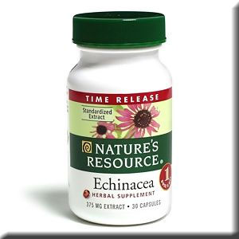
3. Testable predictions, clear outcomes
If Echinacea reduces the duration & severity, then individuals taking Echinacea should get sick less frequently and should recover more quickly.
4. Conduct an experiment
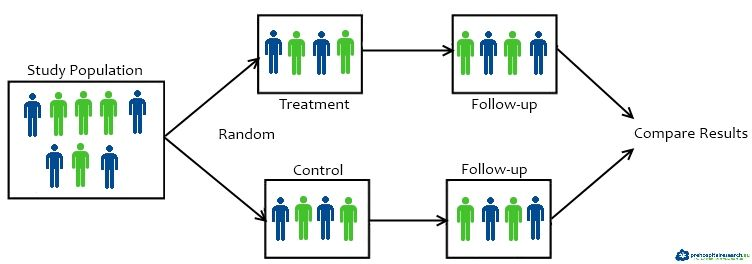
5. Draw conclusions
What next? Repeat the experiment using different variant cold viruses, use larger dose, other populations.
Credits: Statistical Rethinking — Richard McElreath @rlmcelreath
Positivism (19th Century)
Science can rise above superstition by specializing in the description and analysis of observable phenomena, leading to discovery of natural laws.
Logical positivism
Science progresses toward truth by observation, formulation of hypotheses, empirical verification, leading to additional hypotheses. Scientific questions are referred to as “positive” while unscientific ones are “normative”.
In other words, we are born Bayesian…
Background
Applies Popper’s theory to statistics:
“The null hypothesis is never proved or established, but is possibly disproved, in the course of experimentation. Every experiment may be said to exist only in order to give the facts a chance of disproving the null hypothesis.” (Fisher, 1947)
The hypothesis is true or false, there is no probability…
“Scientific hypotheses can be rejected (i.e. falsified), but never established or accepted the same way.”
Refutation and hypothetico-deductive approaches were developed to avoid the concept that theories in sciences can be appraised in terms of their “probabilities”.
Theories usually lie between being certainly right or certainly wrong, we cannot tell…
“It is often stated that one should experiment without preconceived ideas. This is simply impossible; not only would it make every experiment sterile, but even if we were ready to do so, we could not implement this principle. Everyone stands by his own conception of the world, which he cannot get rid of so easily.” (Poincaré, 1905)
Bayesian statistics have an inductive approach:
| Frequentist | Bayesian | |
|---|---|---|
| Data | A repeatable random sample — there is a frequency | Fixed, probably a few samples |
| Belief | No expression of belief (formally not present) → objective view on probability | Approach deals with belief (formally present) → subjective view on probability; updates beliefs in the evidence of new data (posterior distribution) |
| Frequentist | Bayesian | |
|---|---|---|
| Estimate | Point estimate using MLE and Least Squares Estimate | Posterior distribution with high density interval (mean, mode, median) |
| Parameters | Fixed and unknown | Unknown, random, described probabilistically |
| Frequentist | Bayesian | |
|---|---|---|
| Interval | Confidence interval: over an infinite sample size taken from population, 95% of these contain the true population value | Credible interval: a 95% probability that the population value is within the limits of the interval |
| Hypothesis testing | Statistical hypothesis testing with p-value and significance level | Bayes factor — direct test of null and alternate hypothesis, measure of strength of evidence |
| Computation | Less computationally intensive | Computationally intensive |
Ideas often put forward as scientific when they are not.
Examples
Examples (cont.)
Can be dangerous.
“An approximate answer to the right problem is worth a good deal more than an exact answer to an approximate problem.” ~ John Tukey
A good research question should be:
Step 1. Determine the components of the research question and the type of question under study
Step 2. Classify the type of research question
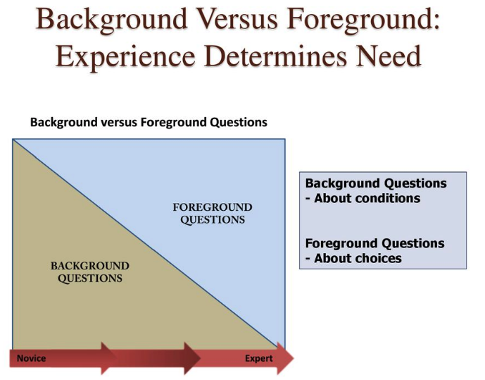
Background — general knowledge
Foreground — more specific, PICO(t)
Research question → Study design
The research question determines the appropriate study design — not the other way around.
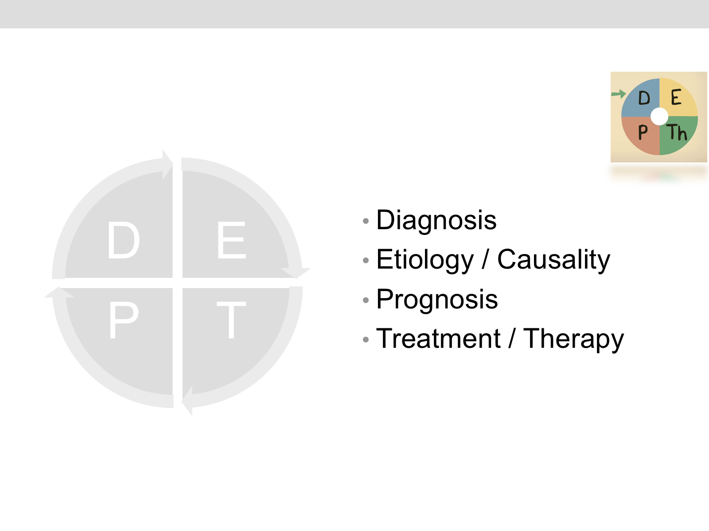
If there are unclear questions the design cannot be adapted appropriately and the horizon is lost, including the analytical and interpretive.
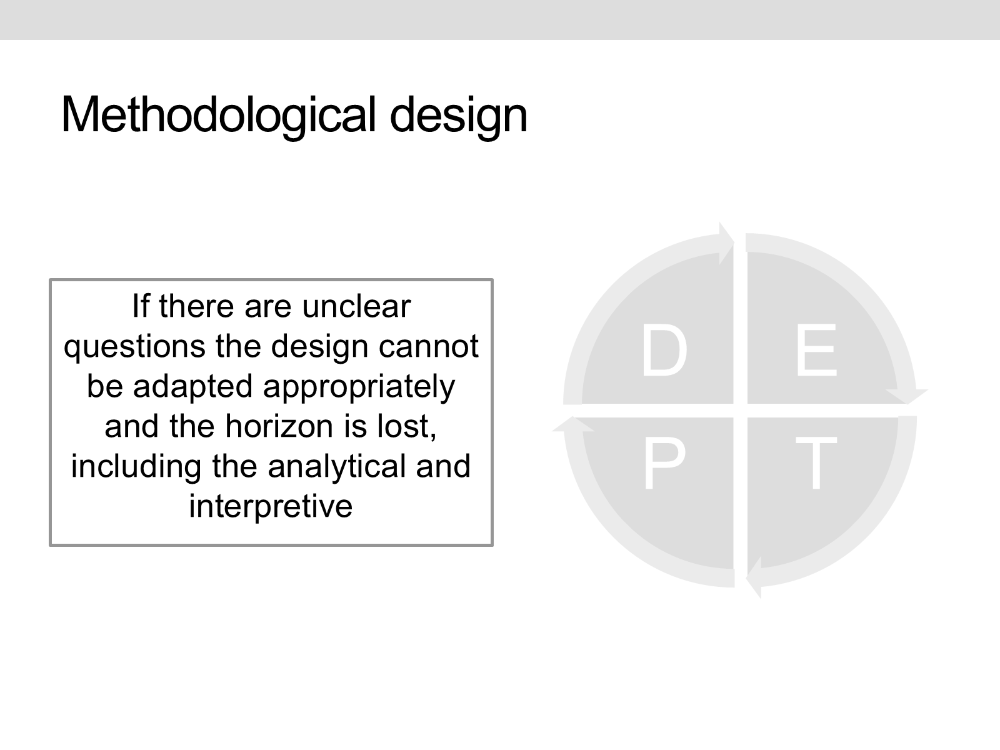
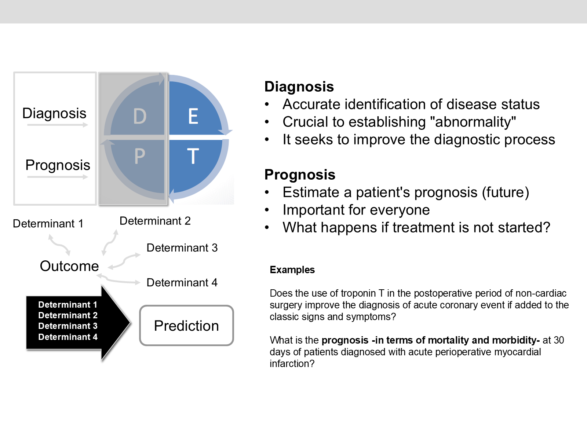
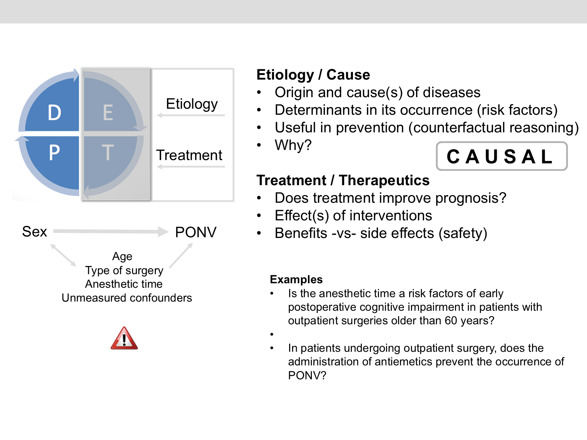
| Question type | Research designs |
|---|---|
| Effectiveness of an intervention | RCT > Experimental > RDD > CE |
| Diagnosis | Diagnostic test (Cross sectional*) > Cohort > RCT |
| Etiology / Cause | Cohort > Case-control > Cross sectional |
| Prognosis | Cohort > RCT |
| Safety / Harm | RCT > Case-control > Cohort > Case Series > Case Report |
| Values and preferences | Qualitative research > Surveys (Cross sectional*) |
| Prevalence | Cross sectional > Cohort |
| Incidence | Cohort > RCT |
| Element | Purpose |
|---|---|
| Research question(s) | Direct research — the main objective of the process; PICOt structured or unstructured |
| Background | Importance of the topic under study; existing knowledge and justification |
| Design | Strategy to find the answer; epidemiological methodology |
| Subjects under study | Selection of study participants — who they are and how they will be selected |
| Variables | What information will be collected — predictors, confounders, outcome(s) |
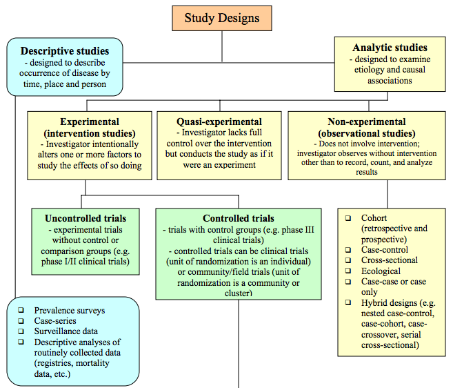
Koepsell & Weiss. Epidemiologic Methods. Oxford University Press, 2003
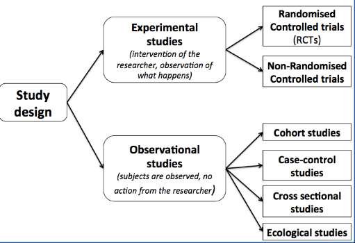
Grimes et al. Lancet 2002;359:57-61
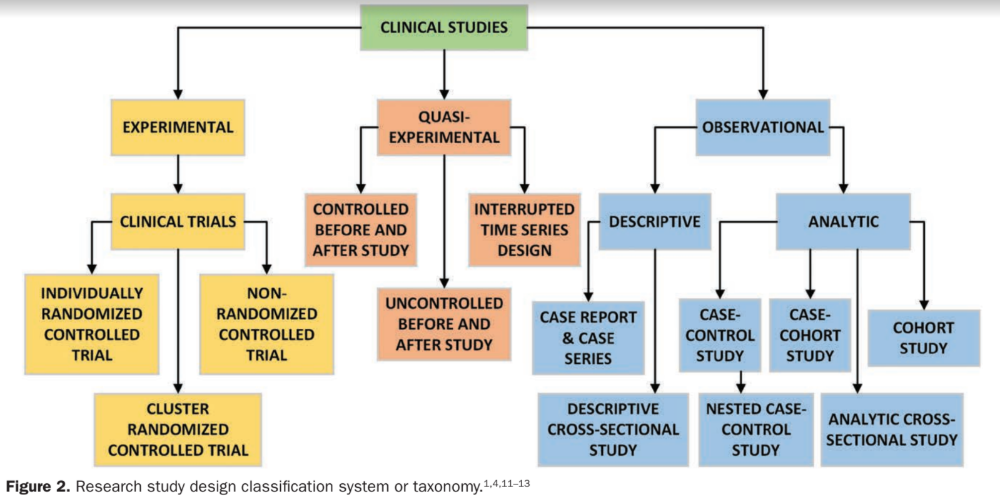
Longitudinal or follow-up
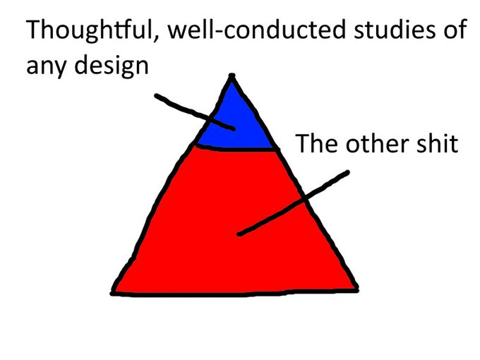
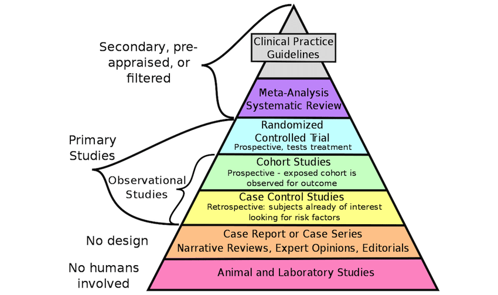
Traditional “evidence pyramids” oversimplify how study designs relate to each other and to evidence quality.
Population is an aggregate of subjects (share a condition).
Closed cohorts
Open cohorts or Dynamic Population Study (DPS)
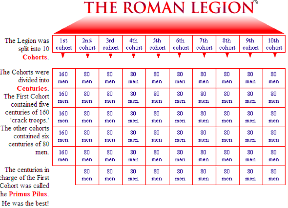
A Roman “cohort” (cohors) was one of ten divisions of a legion — the origin of the epidemiological term for a defined group followed over time.
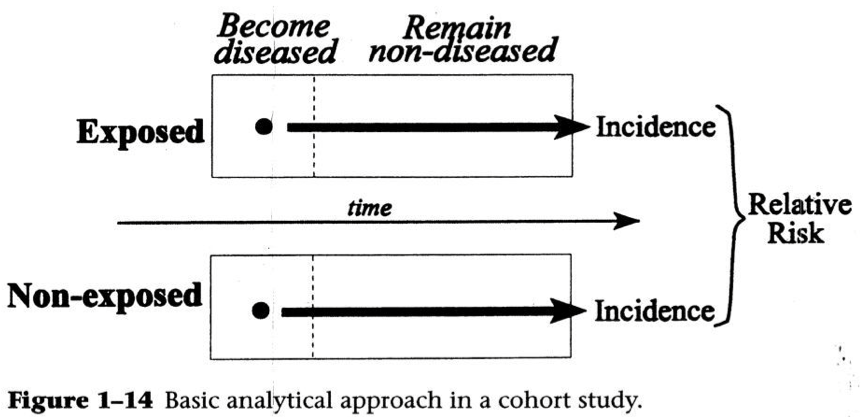
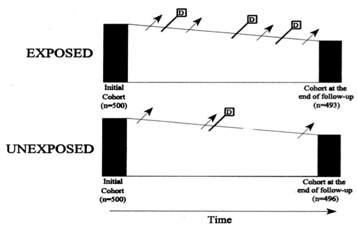
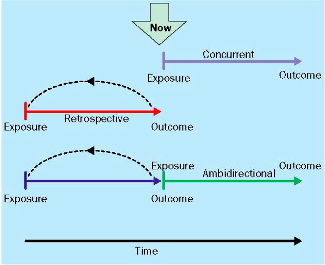
Concurrent, retrospective, and ambidirectional cohorts differ in when exposure and outcome are measured relative to “now”.
Advantages
Disadvantages
The Rotterdam Study is a prospective, population-based cohort study. The aim of the Rotterdam Study is to investigate factors that determine the occurrence of cardiovascular, neurological, ophthalmological, endocrinological, and psychiatric diseases in elderly people.
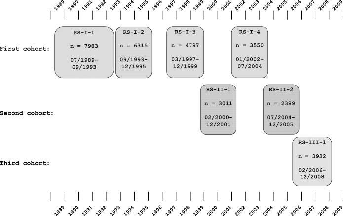
Diagram of examination cycles of the Rotterdam Study
The initial cohort (RS-I) started out in 1990 with 7,983 men and women aged 55 years and over. Follow-up visits were held in 1994-1995, 1997-1999, 2002-2004, and 2009-2011.
http://www.erasmus-epidemiology.nl/research/ergo.htm
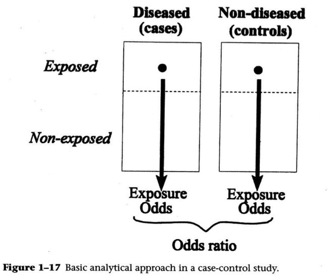
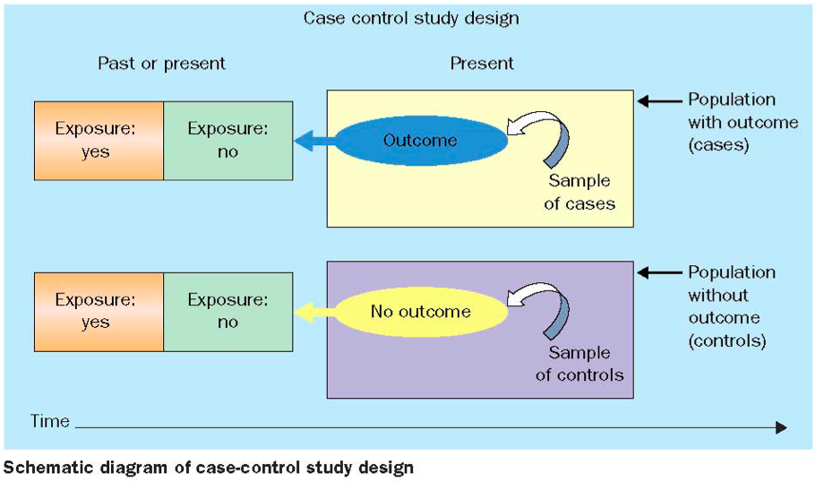
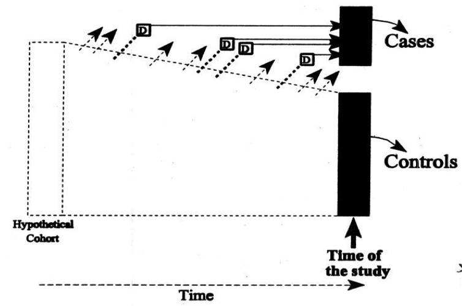
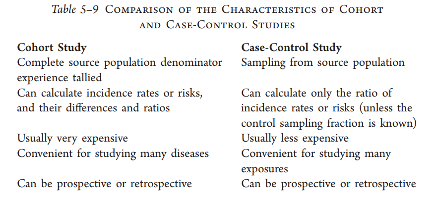
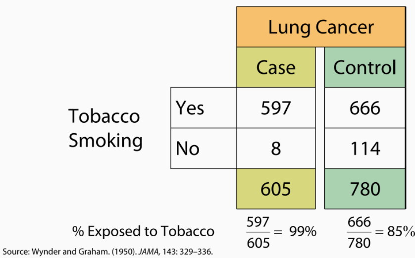
Advantages
Disadvantages
Prevalence studies
A study that examines the relationship between a state of health-disease (exposure), other variables of interest that already exist, and one or more outcomes, in a population in a given time.
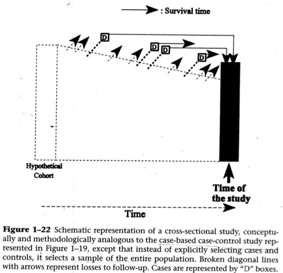
Advantages
Disadvantages
As part of a population-based screening program, researchers evaluated the prevalence of microalbuminuria in relatives of patients with chronic kidney disease (CKD) compared with the general population. The prevalence of microalbuminuria was significantly greater in those with a family history of CKD than in the age- and sex-matched control group.
Bello AK, Peters J, Wight J, de Zeeuw D, El Nahas M; European Kidney Institute. A population-based screening for microalbuminuria among relatives of CKD patients: the Kidney Evaluation and Awareness Program in Sheffield (KEAPS). Am J Kidney Dis. 2008 Sep;52(3):434-43.
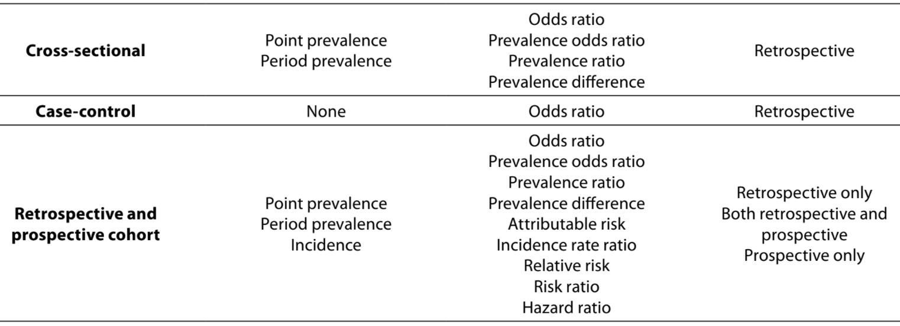
Observational study design measures of disease, measures of risk, and temporality.
Researchers investigated whether pioglitazone was associated with an increased risk of bladder cancer in people with type 2 diabetes. Use of pioglitazone, an oral antidiabetic agent in the thiazolidinedione class, is controversial.
A cohort of 115,727 patients with type 2 diabetes was established, with patients entering the cohort if they had been newly treated with oral hypoglycaemic agents. Patients were considered exposed to pioglitazone if they had ever taken it, with duration and cumulative dosage recorded.
In the cohort, 376 cases of bladder cancer were diagnosed (at least one year after cohort entry, to account for latency). Each case was matched to as many as 20 controls on year of birth, year of cohort entry, sex, and duration of follow-up. A total of 6,699 controls were identified.
The researchers reported that the use of pioglitazone was associated with an increased risk of bladder cancer among people with type 2 diabetes.
Which one of the following study designs best describes that used above?
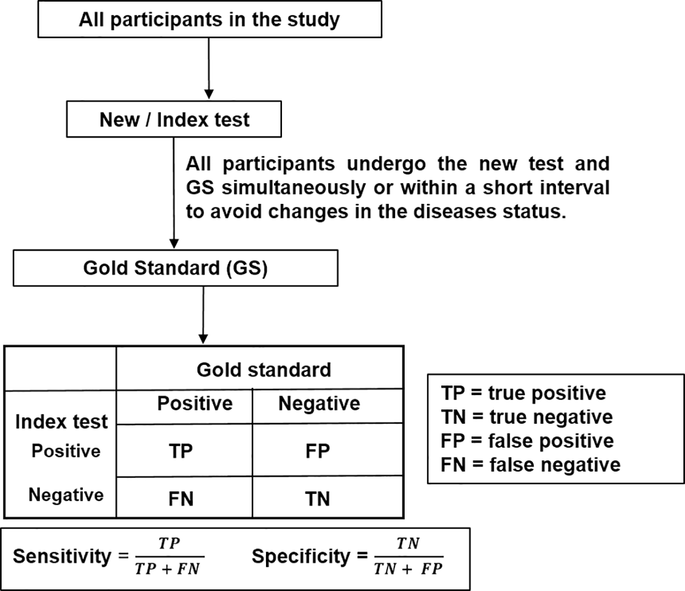
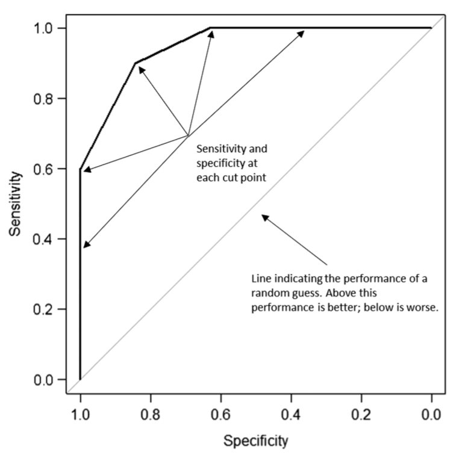
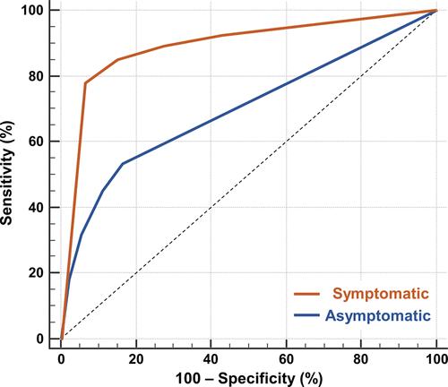
Understanding outcome as “occurrence of a disease or a state associated with disease” (e.g. death, metastasis in breast cancer).
What is the inception point of the study?
The cohort study allows to directly estimate the absolute risk of occurrence of the outcome. The absolute risk ratio is the relative risk (RR).
| Yes | No | Total | |
|---|---|---|---|
| Exposed | a | b | a+b |
| Non exposed | c | d | c+d |
| Total | a+c | b+d | a+b+c+d |
\[\text{Relative risk (RR)} = \frac{CI_{exp}}{CI_{non\ exp}} = \dfrac{\frac{a}{a+b}}{\frac{c}{c+d}}\]
Having a control group is not a requirement of cohort design since its objective may be:
In none of the cases can the absolute risk of occurrence of the outcome be calculated directly.
| Yes | No | Total | |
|---|---|---|---|
| Exposed | a | b | a+b |
| Non exposed | c | d | c+d |
| Total | a+c | b+d | a+b+c+d |
Dekkers O, Egger M, Altman DG, Vandenbroucke JP. Distinguishing Case Series From Cohort Studies. Ann Intern Med. 2012;156:37-40.
The clinical trial is a prospective human study that compares the effect of an intervention in a group with a control, in a disease or in a given condition.
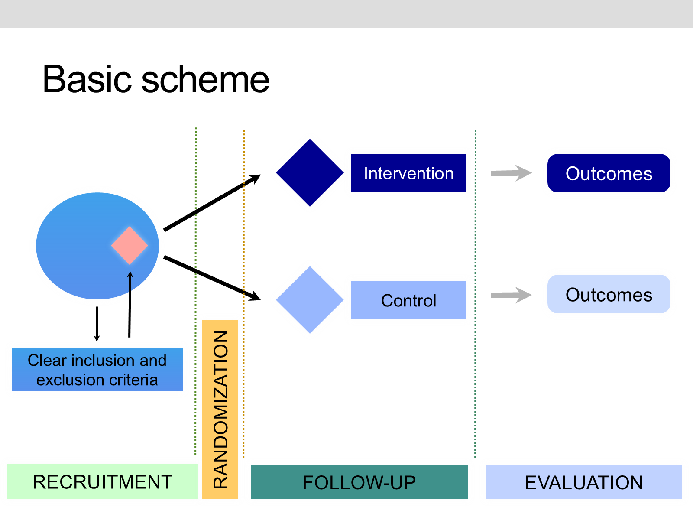
In 1948, Sir Austin Bradford Hill published the first RCT with strict concealed randomization of patients to treatment or control, and blinding of researchers to avoid bias.
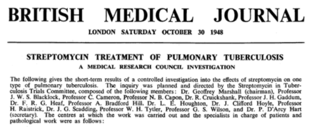
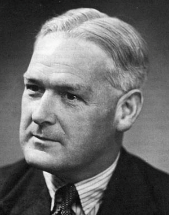
Medical Research Council (1948b). Streptomycin treatment of pulmonary tuberculosis: a Medical Research Council investigation. BMJ 2:769-782.
| Alive | Dead | Total | |
|---|---|---|---|
| Streptomycin | 51 | 4 | 55 |
| Placebo | 38 | 14 | 52 |
Mortality: 7% with streptomycin vs 27% with placebo.
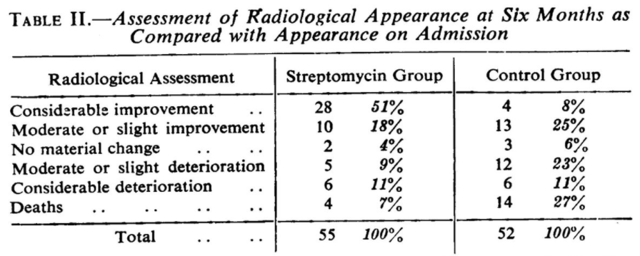
Balmoral Castle in Scotland
A systematic review is built from many individual studies, the same way a castle is built from many bricks.
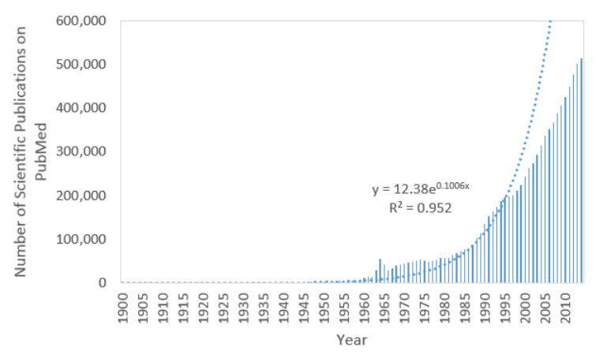
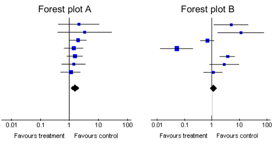
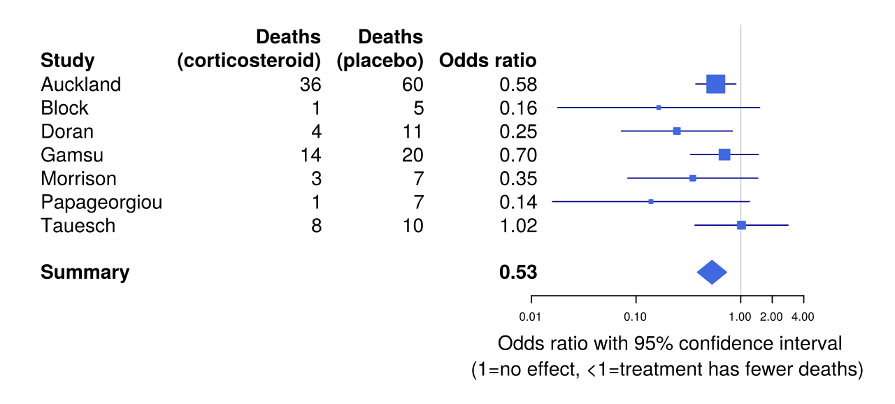
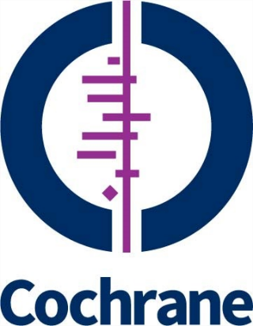
The Cochrane Collaboration logo is itself a forest plot — summarizing the evidence for corticosteroids given to women expected to deliver prematurely, showing a reduction in the odds of death among premature babies.
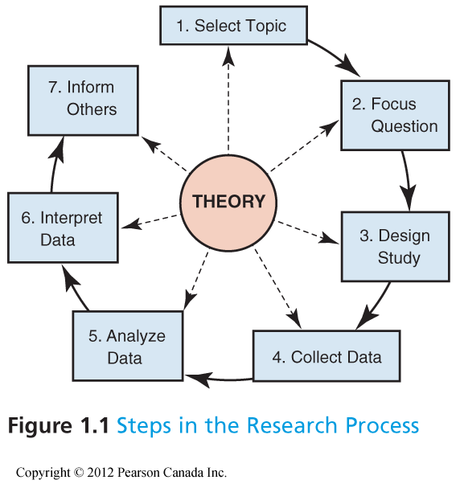
Figure 1.1 Steps in the Research Process
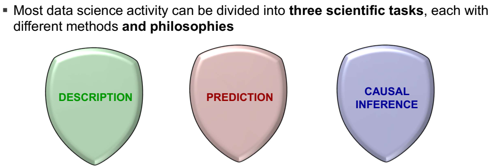
Hernán et al. A Second Chance to Get Causal Inference Right. CHANCE 2019;32(1):42-49. Credits to @PWGTennant
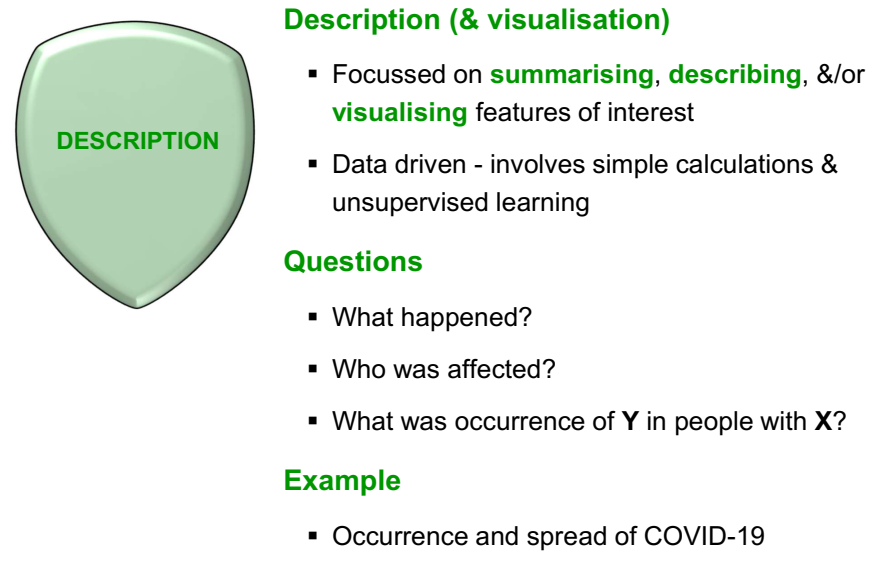
Credits to @PWGTennant
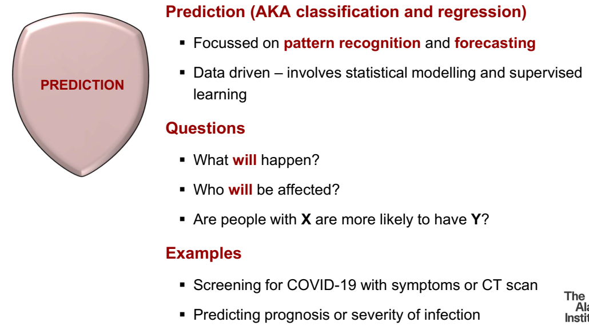
Credits to @PWGTennant
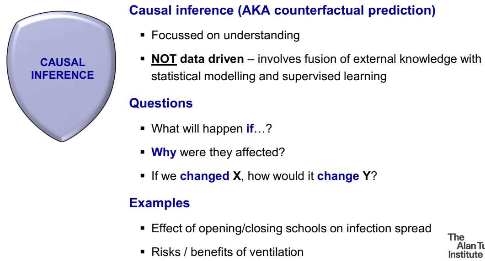
Credits to @PWGTennant
Appropriate objectives are the route map of statistical analysis.
“The greatest invention of the nineteenth century was the invention of the method of invention.”
— A. N. Whitehead
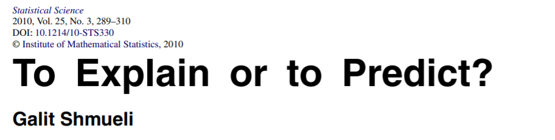
Galit Shmueli. “To Explain or to Predict?” Statistical Science, 2010, Vol. 25, No. 3, 289-310. DOI: 10.1214/10-STS330
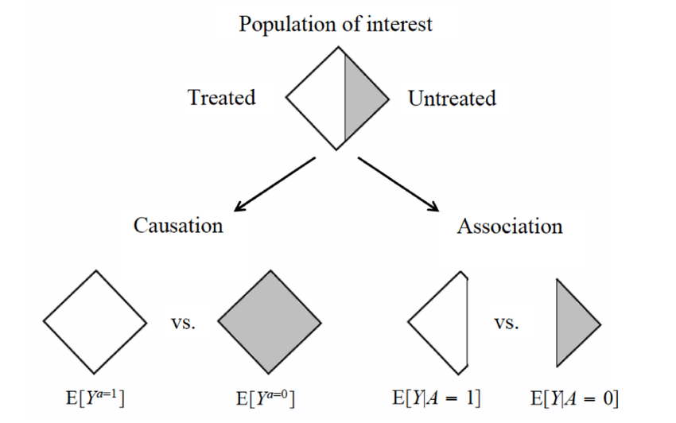
Hernán MA, Robins JM (2020). Causal Inference: What If. Boca Raton: Chapman & Hall/CRC.
Association — definition: the concurrence of two variables more often than would be expected by chance.
Types of association:
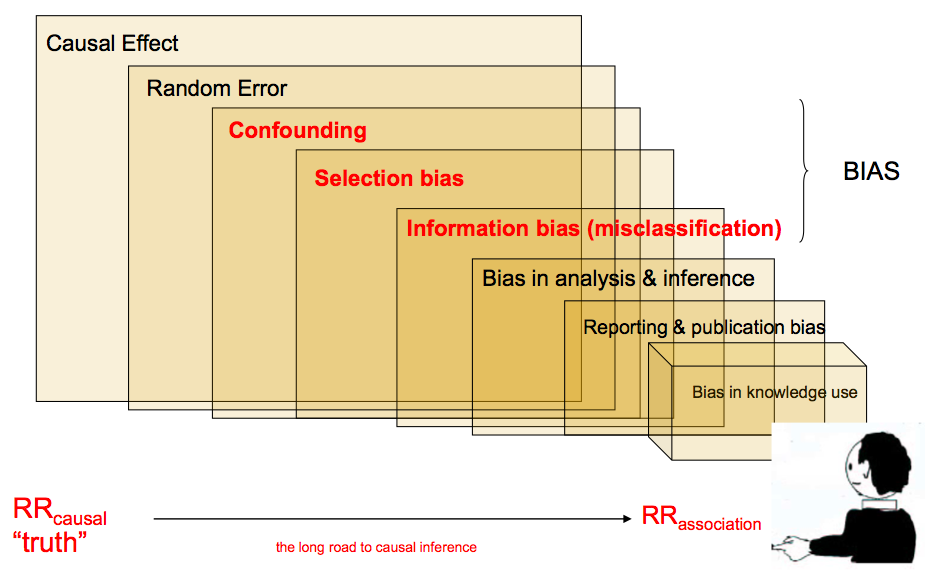
The long road to causal inference: from RR causal “truth” to RR association, through random error and multiple sources of bias.
What exactly does your mind need to consider something causal?
Association
Causation
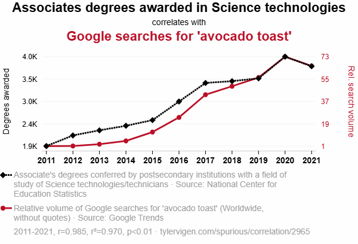
Associates degrees awarded in Science technologies correlates with Google searches for “avocado toast” (2011–2021).
Research questions should be explicitly classified as:
Key principle: The research objective should determine the estimand, methods, and variable selection—not the other way around.
| Section | Preferred terminology |
|---|---|
| Introduction / Methods | Causal effect — define the causal question and target estimand |
| Results | Association — describe the observed statistical relationship |
| Discussion | Estimated causal effect — interpret the association under stated causal assumptions |
Causal inference requires explicit consideration of exchangeability, positivity, and consistency, supported where appropriate by DAGs, target trial emulation, and sensitivity analyses.
| Objective | Recommended language | Example interpretation |
|---|---|---|
| Descriptive | Describe, characterize, document, compare | “The age-adjusted risk of dementia differed by 5% between the two educational groups.” |
| Predictive | Predict, classify, forecast, risk stratification | “The model predicted 5-year dementia risk with an AUC of 0.82.” |
| Causal | Causal effect, intervention, impact, affect | “Under the stated causal assumptions, vitamin B supplementation reduced 5-year dementia risk by 5 percentage points.” |
Core principle: The language of the paper should reflect the scientific question and the estimand—not merely the statistical model used.
Haber NA, et al. Causal and Associational Linking Language From Observational Research and Health Evaluation Literature in Practice: A systematic language evaluation. medRxiv 2021.08.25.21262631; doi: https://doi.org/10.1101/2021.08.25.21262631
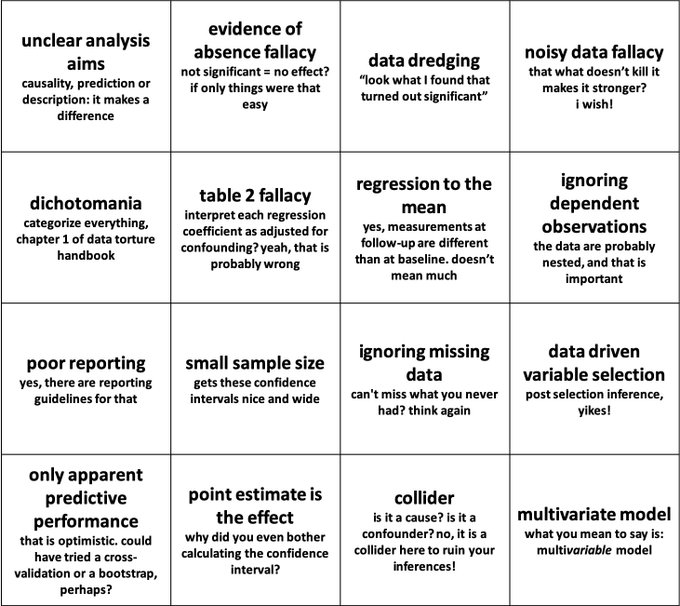
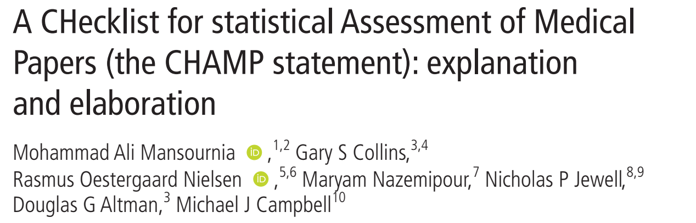
Mansournia MA, et al. Br J Sports Med 2021;0:1-9. doi:10.1136/bjsports-2020-103652
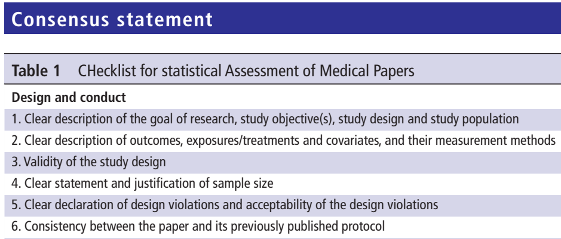
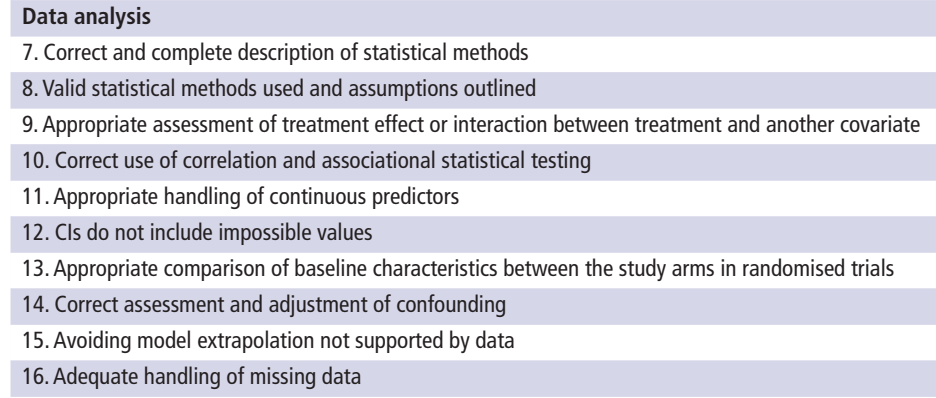
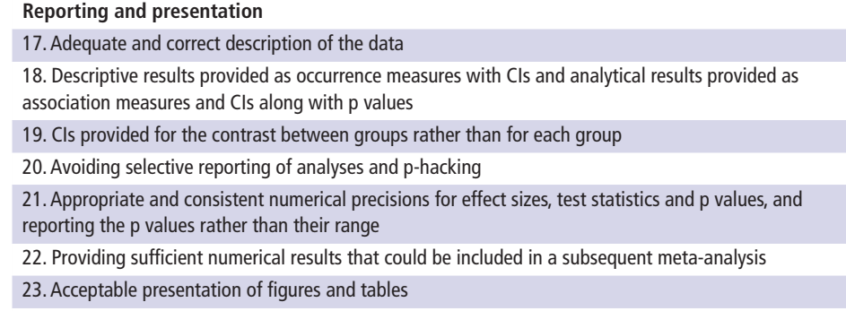
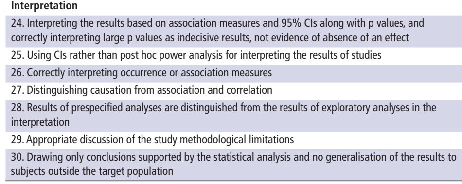
Comic by @RosanaFerrero (in Spanish)
Statistics is not a bag of tools and math formulas but an evidence-based way of thinking.
It is all important to:
Problem → Plan → Data → Analysis → Conclusion (adapted from F. Harrell, Biostatistics for Biomedical Research)